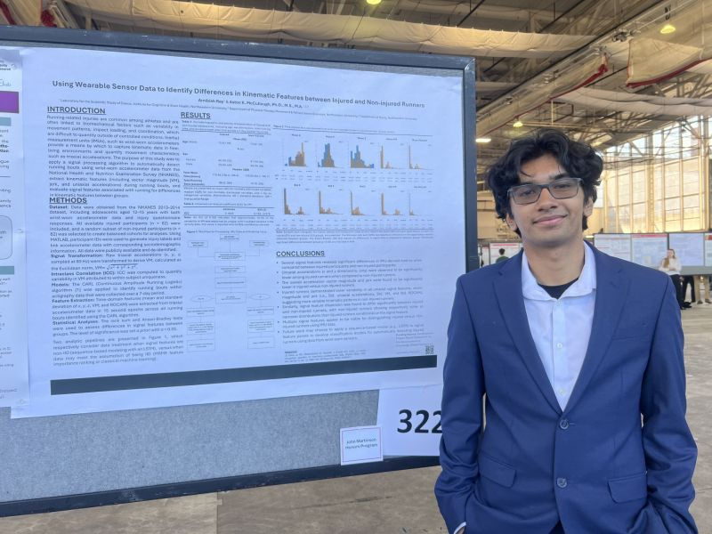
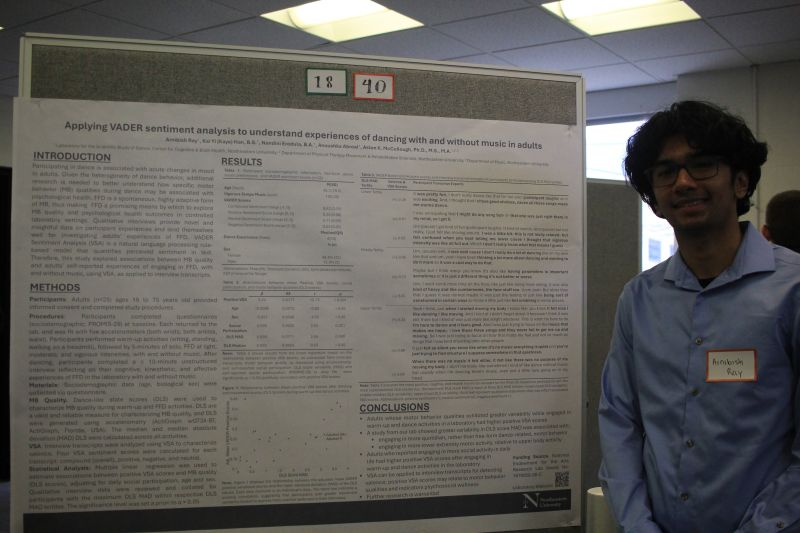
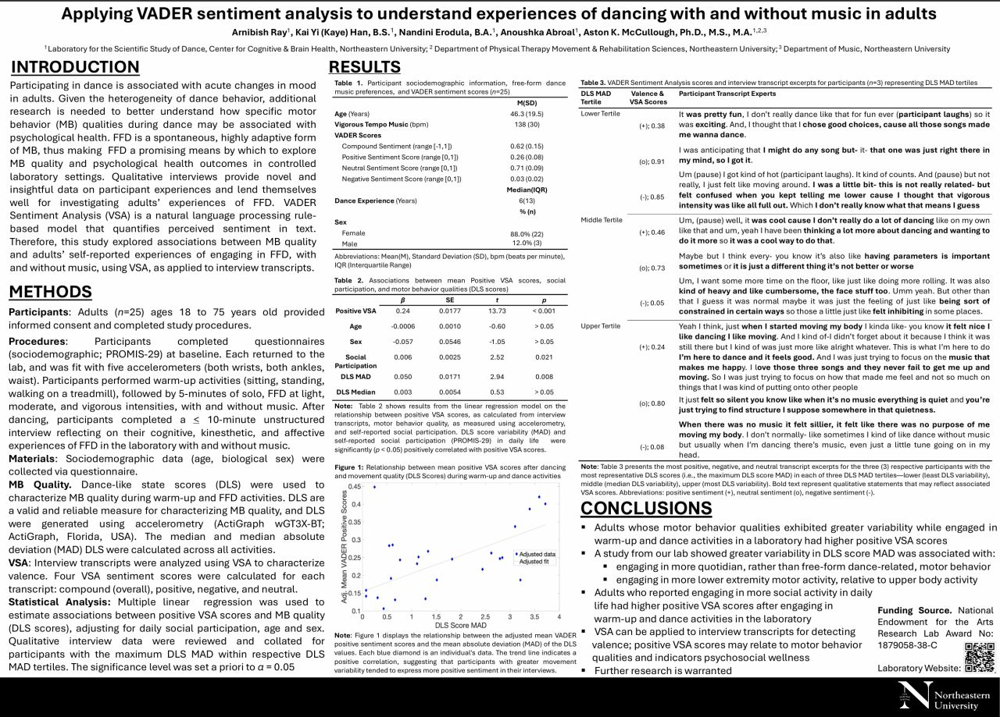
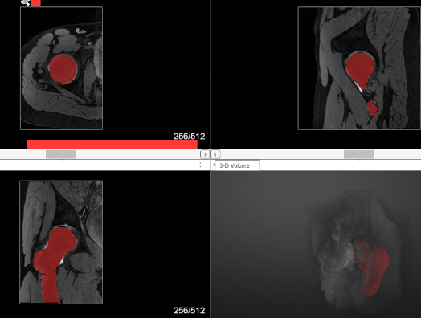

Research Experience
Ongoing research across two labs at Northeastern, spanning wearable sensing, biomechanics, and musculoskeletal imaging.
Human movement and biomechanics research group at Northeastern. My work spans wearable sensing, computational analysis, natural language processing, and large physiological datasets across two projects below.
Wearable IMU Running Biomechanics (PEAK Fellowship)
Through Northeastern's PEAK Base Camp Fellowship, studied running biomechanics using wearable IMU sensors (accelerometers and gyroscopes) across a dataset of about 1,798 individuals from a running injury clinic, plus roughly 8,000 archived activity files from NHANES sampled at 80 Hz. Processed and cleaned the sensor signals, explored clustering methods to group runners by shared biomechanical traits, and built criteria to identify running segments within the larger national dataset.


VADER Sentiment and Movement Analysis
Studied how adults emotionally experience movement and dance tasks, with and without music. Participants completed movement conditions and wrote about the experience; I applied VADER (a natural language processing sentiment tool) to turn those written responses into numerical valence scores, then compared them against motor behavior variability from the movement data. Helped interpret results and present findings through a scientific poster.


Biomechanics and musculoskeletal research on hip morphology, studying anatomical traits linked to femoroacetabular impingement and hip dysplasia in athletes. Work includes identifying anatomical landmarks in medical images, labeling structures, and measuring geometric hip features to compare across participants.
